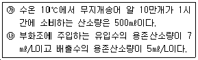
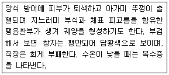

1과목: 어류양식학
1. 미꾸라지의 식용어 양성 시 적당한 방양 마릿수는?
2. 무지개송어의 치어 사육과정에서 선별(grading)에 대한 설명 중 옳은 것은?
3. 사료 성분 중의 지방과 비타민류의 산화 방지를 위해 사용되는 항산화제가 아닌 것은?
4. 자주복의 생태에 대한 설명으로 틀린 것은?
5. 다음 어류 중 혼합양식이 가능한 종은?
6. 양어사료에 섞인 지방의 산화방지제로 주로 사용하는 것은?
7. 다음 중 잉어가 가장 잘 자라는 수온의 범위는?
8. 다음의 내용에서 필요한 시간당 주수량은?

9. 넙치 사육에서 수온에 따른 내용이 바르게 연결된 것은?
10. 다음 중 틸라피아 생태에 관한 사항으로 틀린 것은?
11. 조피볼락의 친어 관리 및 생태에 관한 내용 중 틀린 것은?
12. 진공 포장하여 보관하다가 필요할 때 부화시켜 어패류의 초기 먹이로 널리 이용되는 생물의 이름은?
13. U.G.F(미지성장 인자)의 효과를 위해서 쓰일 수 있는 사료의 성분은?
14. 현재 육종에 의한 생산 증대의 효과를 기대하기가 어려운 양식 종은?
15. 다음 중 자연산 방어 종묘로서 피해야 하는 것은?
16. 가물치의 생태적 특징으로 틀린 것은?
17. 넙치 친어의 암수 구분에 대한 설명으로 맞는 것은?
18. 먹이생물이 갖추어야 할 조건이 아닌 것은?
19. 참돔 종묘생산 시 참돔 치어의 먹이로 적합하지 않은 것은?
20. 은어의 양식에서 사료 공급 시의 주의 사항과 가장 거리가 먼 것은?
2과목: 무척추동물양식학
21. 고막류 중에서 양성장의 수심이 가장 깊은 곳에서 양식 가능한 종류는?
22. 까막전복(둥근전복)의 완숙에 필요한 적산 수온은?
23. 부유유생기에 먹이를 반드시 공급해야 하는 양식생물은?
24. 개량조개에 대한 설명 중 틀린 것은?
25. 전복 종패의 크기가 2㎝ 되는 것을 방양할 때 생존율을 높이기 위해서는 반드시 필요한 사항은?
26. 키조개의 종묘 생산에 관한 내용 중 적합하지 않은 것은?
27. 보리새우의 유생 발달단계 순서가 옳은 것은?
28. 굴 부착치패 관리상 알아야 할 사항으로 틀린 것은?
29. 조차가 심한 곳에서 참굴의 부착층으로 가장 적합한 곳은?
30. 생태적으로 일시 부착성 동물에 속하는 것은?
31. 먹이로 많이 이용되고 있는 Brachionus plicatilis는 분류상 어디에 속하는가?
32. 다음 중 문어의 사육 밀도에 영향을 미치는 가장 큰 요인은?
33. 단련종굴의 생산과정을 4단계로 나눌 때 3단계에 해당하는 것은?
34. 대합류의 이동습성과 관계된 관리방법 설명으로 틀린 것은?
35. 조위망식 양성을 가장 맞게 설명한 것은?
36. 양식생물과 부화유생의 명칭 연결이 틀린 것은?
37. 소라의 종묘 생산에 적합하지 않는 먹이 종류는?
38. 전복초란 무엇인가?
39. 참굴 채묘장에서 따개비의 부착이 많을 때 그 부착을 최대한으로 방지하는 방법으로 가장 적합한 것은?
40. 종묘생산 시 탈락방지를 위한 보호망을 설치해야 하는 종류는?
3과목: 해조류양식학
41. 자리바꿈에 우세하여 김발에 잘 나타나는 품종은?
42. 청각의 채묘 시 대상 포자는?
43. 우뭇가사리의 번식에서 볼 수 없는 것은?
44. 미역 종묘의 가이식 필요성에서 볼 때 그 비중이 가장 낮은 것은?
45. 다음 중 미역 유주자의 착생이 잘 되는 조건과 가장 거리가 먼 것은?
46. 청각의 성장이 가장 빠른 시기는?
47. 미역의 가이식 시에 나타나는 싹녹음의 주원인은?
48. 풀가사리의 수직분포가 좁은 범위에 한정된 이유와 가장 거리가 먼 것은?
49. 김발의 단기 냉장을 하는 목적이 아닌 것은?
50. 미역의 생활사를 순서대로 나타낸 것은?
51. 김의 채묘시각과 시간과의 관계에서 가장 좋은 채묘 성적을 올릴 수 있는 조건은?
52. 다시마의 종묘생산에서 촉성배양을 위한 주요 영양염이 아닌 것은?
53. 김 생활사 중 핵상에 대한 내용이 옳은 것은?
54. 다시마의 죵묘 배양과정에서 배우체의 수정율이 가장 좋은 조도는? (단, 수온은 13℃ 전후일 경우)
55. 덮발에 의한 씨발의 관리 과정에서 김싹이 1㎜ 정도 자랐을 때 갑자기 투명도가 높고 해파리가 많이 나타났다면 다음 중 이때의 가장 효과적인 대책은?
56. 다시마의 상품가치가 되는 주된 기준은?
57. 홑파래의 접합자를 받는 방법으로 틀린 것은?
58. 김발의 변천사가 올바른 것은?
59. 곰피 종묘관리 중 전기 배양관리 시 적합한 조도는?
60. 다시마 종묘배양에 관한 설명으로 틀린 것은?
4과목: 양식장환경
61. 활성 오니 여과 방법의 특징이 아닌 것은?
62. 하천의 일반적인 특성과 다른 것은?
63. 수역의 자정작용에 대한 내용이 틀린 것은?
64. 양식장에서 사용하는 취수정 및 펌프실 구조에 대한 설명 중 틀린 것은?
65. 자외선으로 용수를 소독하는 방법에 관한 설명으로 옳은 것은?
66. 수질 측정방법의 연결이 틀린 것은?
67. 생물학적 여과를 3단계로 순차적으로 나눈 것은?
68. 호수의 부영양화(entrophication)란?
69. 해수의 비중을 비중계로 측정할 때 동시에 함께 측정하여야 는 것은?
70. 정수식 못양식에서 어류의 수용밀도를 정하는 주 기준은?
71. 수질 조사법에 관한 설명 중 옳은 것은?
72. 수중의 용존산소에 대한 설명 중 틀린 것은?
73. 다음 중 생물 부착막 여과와 가장 거리가 먼 것은?
74. 활어의 운반시간이 길어질 때 어류의 대사 또는 표피분비에 의한 오물이 물속에 축적되는 것을 제거하기 위해 갖추어야 할 장치는?
75. pH 7~8의 수계에서 존재하는 CO2의 주된 형태는?
76. 적조 발생과 그 피해에 관하여 바르게 설명한 것은?
77. 생물학적 여과 중 질산화 과정에 참여하는 세균은?
78. 다음 중 정수식 못 양식에서 물의 보충에 관한 내용으로 가장 적합한 것은?
79. 양식용수로 사용되는 지하수의 일반적인 특징과 가장 거리가 먼 것은?
80. 다음 중 양식시설의 수질오염 저감 방안으로 가장 거리가 먼 것은?
5과목: 수산질병학
81. Dactylogyrus 감염에 의한 해작용에 대한 설명 중 틀린 것은?
82. 기수지역의 뱀장어 양식장에서 잘 발생하며 온몸의 표면에 바늘로 찌른 것과 같은 점상의 출혈이 다수 관찰되는 질병의 원인균은?
83. Nocardia증의 주 증상은?
84. 잉어에 유두종(Papilloma)을 일으키는 경우, virus가 주원인이 되는데 이 병은?
85. 절창병의 설명으로 틀린 것은?
86. 뱀장어에 유행되는 콜룸나리스병의 수온에 따른 감염어 폐사율의 설명이 옳은 것은?
87. 균사에 의해 은어의 피부조직이 파괴되고 육아종을 형성하는 진균성 육아종의 원인생물은?
88. 연어, 송어류의 간에 글리코겐이 과잉 축적되어 글리코겐 간이 되었고, 간이 퇴색되었다면 이 경우 주로 관계되는 영양소는?
89. 어류의 조충병을 일으키는 원인충이 아닌 것은?
90. 넙치의 랩도바이러스병에 대한 설명이 틀린 것은?
91. 수서동물의 질병발생 유발 요인과 가장 거리가 먼 것은?
92. 노출이 불충분하고 광선이 부족할 때 생기는 갯병은?
93. 수온 20~25℃인 여름철에 강우량이 많아서 염분농도가 낮을 때 주로 유해오디는 질병은?
94. 다음의 증상으로 진단되는 질병은?

95. 잉어의 아가미에 포자낭에 형성함으로서 폐사하기도하는 질병은?
96. 방어나 넙치에 있어서 Streptococcus sp.가 감염되어 질병이 발병할 때 특징적인 병증은?
97. 잉어의 세균성 백운병을 일으키는 병원체는?
98. 냉수성 어류에 유행되는 virus성 질병은 많은 어류를 폐사시키는데, 이러한 폐사를 최소한으로 감소시킬 수 있는 방법은?
99. 바이러스성 적혈구 괴사증(VEN)의 감염 대상 어류가 아닌 것은?
100. 황반병의 만연과 가장 밀접한 관계가 있는 것은?